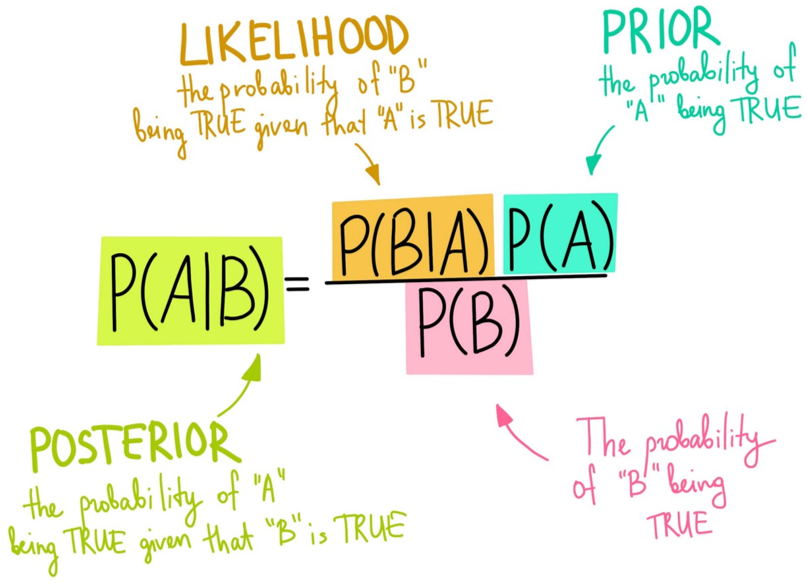
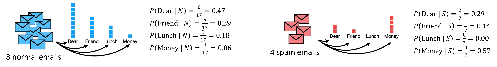
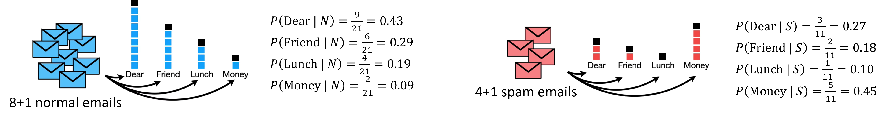

Naive Bayes Algorithm#
import pandas as pd
from sklearn.model_selection import train_test_split
import string
from nltk.tokenize import word_tokenize
from nltk.corpus import stopwords
from nltk.stem import WordNetLemmatizer
from sklearn.feature_extraction.text import TfidfVectorizer
from sklearn.naive_bayes import MultinomialNB
Naive Bayes Algorithm คือ classication ที่ใช้ Bayes’ theorem ทำได้โดยใช้ sklearn.naive_bayes.MultinomialNB

ตัวอย่างเช่น การระบุว่าอีเมลหนึ่งเป็นอีเมลปกติ (N) หรือ spam (S)
เริ่มจากนับทุกคำในทุกอีเมลที่ปกติ แล้วคำนวณ probability ที่คำหนึ่งจะปรากฏในอีเมลปกติ (\(P(\text{word}|N)\)) และนับทุกคำในทุกอีเมล spam แล้วคำนวณ probability ที่คำหนึ่งจะปรากฏในอีเมล spam (\(P(\text{word}|S)\))

จากภาพ คำนวณ Prior (probability ที่อีเมลจะเป็นอีเมลปกติ) จะได้
และคำนวณ Posterior probability ที่อีเมลจะเป็นอีเมลปกติ
เช่น ถ้าอีเมลปรากฏข้อความ “Dear Friend” เราจะสามารถคำนวณ
เช่น ถ้าอีเมลปรากฏข้อความ “Lunch Money Money Money Money” เราจะสามารถคำนวณ
\(P(S\:|\:\text{Lunch Money Money Money Money}) = 0.00\) ซึ่งไม่น่าจะถูกต้องในความเป็นจริง เพราะอีเมล spam น่าจะขอเงิน
เพื่อป้องกันการคำนวณ probability แล้วได้ 0 เราต้องทำ smoothing ซึ่งเป็นการเพิ่มจำนวนในแต่ละ feature (มักจะ +1) เพื่อไม่ให้มี feature ใดมีจำนวนเป็น 0

data = pd.read_csv('../data/twitter_sentiment_data.csv')
data
| sentiment | message | tweetid | |
|---|---|---|---|
| 0 | 1 | RT @7im: Aaaand @ScottWalker just eliminated a... | 814547316258512896 |
| 1 | 0 | RT @annelongfield: Know any budding young clim... | 955607502699290625 |
| 2 | -1 | @SenSanders Mainly because climate change has ... | 959276999603716101 |
| 3 | 1 | RT @StephenSchlegel: she's thinking about how ... | 798860441870970883 |
| 4 | 1 | willingly sacrificing common courtesy in order... | 953371679799070721 |
| ... | ... | ... | ... |
| 8784 | 0 | @BarackObama @capitalweather Gary Johnson: For... | 779353621427138560 |
| 8785 | 1 | So fucking mad, climate change isn't something... | 796529677829623808 |
| 8786 | 0 | RT @moklick: NASA created a page about climate... | 842032360124227584 |
| 8787 | 1 | RT @SenSanders: We have a president-elect who ... | 797897893243822080 |
| 8788 | 0 | @KMOV Man, this global warming is really getti... | 955793233879162881 |
8789 rows × 3 columns
# Drop duplicates and NAs
data = data.drop_duplicates().dropna()
# Feature (X) and target (y)
X = data["message"]
y = data["sentiment"]
# Train-test split
X_train, X_test, y_train, y_test = train_test_split(X, y, train_size=.7, random_state=42)
def preprocess_text_data(X):
X_preprocessed = X.copy()
for idx, txt in X_preprocessed.items():
txt = txt.lower() # lower
txt = ''.join(word for word in txt if not word.isdigit()) # remove numbers
for punctuation in string.punctuation:
txt = txt.replace(punctuation, '') # remove punctuation
word_tokens = word_tokenize(txt) # tokenize
stop_words = set(stopwords.words('english'))
word_tokens = [w for w in word_tokens if not w in stop_words] # remove stopwords
word_tokens = [WordNetLemmatizer().lemmatize(word) for word in word_tokens] # lemmatize
final_text = ' '.join(word_tokens)
X_preprocessed.loc[idx] = final_text
return X_preprocessed
# Perform text pre-processing
X_train_preprocessed = preprocess_text_data(X_train)
X_test_preprocessed = preprocess_text_data(X_test)
# Vectorise training and test sets
vectorizer = TfidfVectorizer(max_features=15).fit(X_train_preprocessed)
X_train_vectorised = vectorizer.transform(X_train_preprocessed)
X_test_vectorised = vectorizer.transform(X_test_preprocessed)
# Create naive bayes model
nb = MultinomialNB().fit(X_train_vectorised, y_train)
# Count the prediction on test texts
pd.Series(nb.predict(X_test_vectorised)).value_counts()
1 2193
0 370
2 71
Name: count, dtype: int64
# Compute accuracy score
nb.score(X_test_vectorised, y_test)
0.5432801822323462